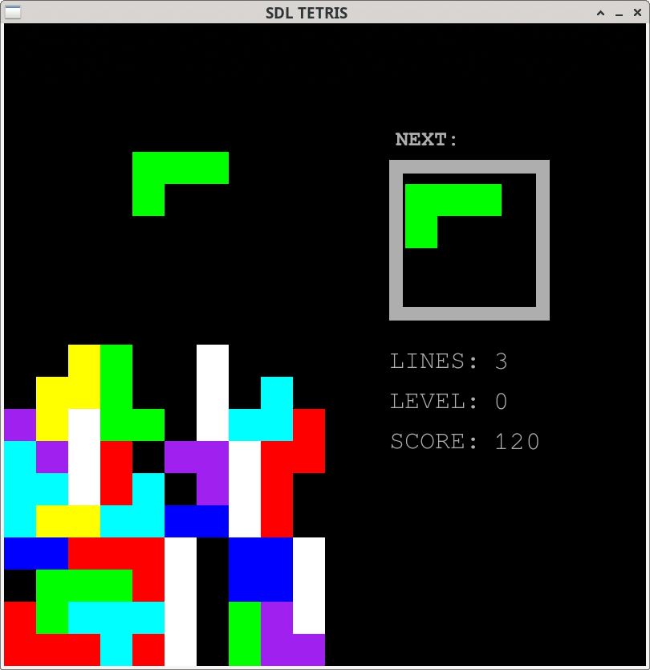

NATHAN242's Projects
Projects
Tools
Libraries
Web Tools
Project repo: LINK
Compiled to WebAssembly: PLAY IN BROWSER
Tetris game in C++ using SDL2.
Use the arrow keys to move the tetrominoes. Press up to rotate and down to fast drop. Press Q to quit. The level increments every 10 lines and cannot go higher than level 9 (yet). Scoring works as follows: